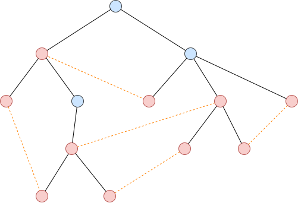
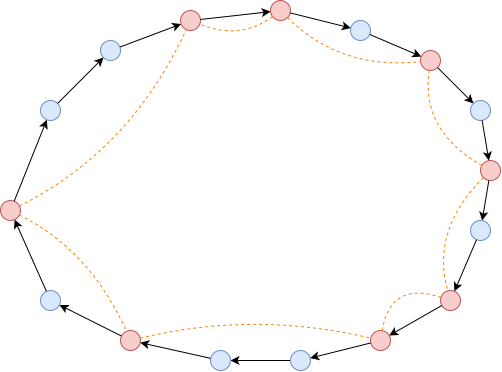

PACT 07/02 TSP问题
定义
输入：完全图$G=(V,E)$，边带正权，满足三角不等式。
目标：构造一个周游所有顶点的最小权回路。
下界估计
$\mathrm{OPT}$的下界是什么？
Hasit: $\mathrm{OPT} \ge n\cdot\min_{e \in E}{w_e}$
这确实是一个下界，但是太松了一点？
Andrew T: $\mathrm{OPT} \ge$边权最小的$n$条边
好一点了，但是还不够！
我: $\mathrm{OPT}\ge$每个顶点相邻的最小边权
似乎还不够？
Mona: $\mathrm{OPT}\ge$最小生成树边权和
没错！证明这个并不难，回路首先是一个连通子图，而连通子图中边数最小的当属生成树，而生成树边权和最小的是最小生成树，因此最小生成树的边权和是一张图中所有连通子图边权和的下界。
基础近似算法以及分析
这启发我们先去构造$G$的最小生成树：

如何在其基础上构造回路呢？
我们不妨给每一条边复制一份：

让后我们走一次DFS，下来的时候走黑边，上去的时候走绿边，整个回路的边权就是最小生成树边权的两倍。
但是这样的话很多点我们重复走了，因此实际走的时候如果接下来的几个点已经走过了我们就直接跳过，如图，数字表示访问顺序：

（不难发现，节点的访问顺序就是DFS序）
由于三角不等式的存在，这个回路的边权一定小于最小生成树边权的两倍。
由于$\mathrm{OPT}\ge$最小生成树边权，因此这个算法至少是一个$2$倍近似算法。
Christofides算法
我们为什么要把最小生成树上的每一条边复制一下？我们的目的其实是让最小生成树变为一张欧拉图。有了欧拉图之后就可以求出欧拉回路，有了欧拉回路之后就可以通过跳过重复点抄近道（shortcutting）的方式得到哈密尔顿回路，也就是我们近似算法的解。
由此可见，一开始的欧拉图很重要。最小生成树之所以不是欧拉图，是因为里面可能会有奇度数的点，那么只要把奇度数的点变成偶度数不就行了嘛！我们之前把每条边都复制一下那无论度数奇偶都变成偶度数了，未免太粗暴了一点。
如何把奇度数变成偶度数呢？首先很显然奇度数的点只有偶数个（度数之和必须是偶数），因此我们想到可以把这些奇度数的点两两配对——或者用更专业的术语来讲，在这些奇度数点的导出子图上计算一个最小权完美匹配。我们知道一个偶数点图的最小权完美匹配是可以通过带花树算法（Blossom algorithm）在多项式时间内求出的，所以这个思路没有问题。

现在我们有了一张欧拉图，只要求出欧拉回路然后在上面抄近道我们就得到了一条周游路线了。
这个算法被称为Christofides算法。
Christofides算法分析
如何分析这个最小权匹配的代价呢？
我们不妨考虑最优周游路线，以及在这条路线上的最小生成树的奇度数点：

如果定义连接奇度数点的橘色环的代价是$C$，显然由三角不等式有$C\le \mathrm{OPT}$，而如果我们把这个环拆开，便会得到两个完美匹配：

假设两个完美匹配的代价为$C_1,C_2$，我们最小权匹配的代价为$C^{\ast}$，显然有
$$
C=C_1+C_2\ge C^{\ast} + C^{\ast} = 2C^{\ast}
$$
因此可得
$$
C^{\ast} \le \frac{1}{2}\mathrm{OPT}
$$
同时我们知道最小生成树的代价$\le \mathrm{OPT}$，因此整张欧拉图的代价$\le \frac{3}{2}\mathrm{OPT}$，而抄近路得到的最终回路的代价只会更小，因此这是一个$\frac{3}{2}$倍近似算法。
令人绝望的一般TSP问题
引理：对于没有三角不等式的一般TSP问题，除非$\mathsf{P}=\mathsf{NP}$，不存在任何$2$倍近似算法以及更优的近似。
证明：我们使用gap reduction来证明这一点。考虑哈密尔顿回路问题到TSP的规约。
哈密尔顿回路问题：给定图$G=(V,E)$，问是否存在哈密尔顿回路？
一般TSP问题：给定边带权完全图$G’=(V’,E’)$，计算最小权回路。
如何规约？对于$G$中有的边，令其在$G’$中的权值为$1$；对于$G$中没有的边，令其在$G’$中的权值为$n+2$。
如此一来，如果$G$存在哈密尔顿回路，则TSP解的代价为$n$，反之则TSP的回路必定会至少用到一条$G$中不存在的边，因此代价至少为$(n-1) + (n+2) = 2n+1$。
假设有一个TSP的$2$倍近似算法，那么如果$G$存在哈密尔顿回路这个算法只能输出$n$，因为$n$到$2n+1$中间有很大的gap，而如果$G$不存在哈密尔顿回路，算法就会输出至少是$2n+1$的代价——因此，我们可以使用这个算法在多项式时间内解决NPC的哈密尔顿回路问题！而如果$\mathsf{P} \neq \mathsf{NP}$，这是不可能的，因此不存在这样的算法。
绝望吧？
更绝望的事情是因为没有三角不等式我们的边权可以设得任意大，不止是$n+2$，还可以是$3n+2$，$kn+2$……我们可以用以上的论证在假定$\mathsf{P} \neq \mathsf{NP}$的前提下否决任意近似比的近似算法——也就是这个问题根本无从近似。